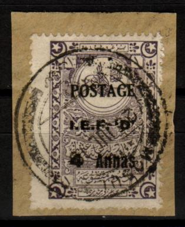
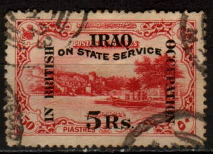
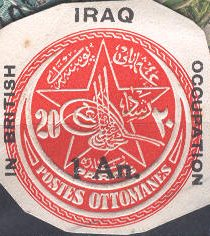

Stamps of Turkey, used in Musul (Irak).
Note: on my website many of the pictures can not be seen!
Before issuing its own stamps, stamps of Turkeywere used in Irak. Example:
Stamps of Turkey, used in Musul (Irak).
1/4 a on 5 pa brown 1/2 a on 10 pa green 1 a on 20 pa red 1 1/2 a on 5 pa brown (overprint red or black) 2 1/2 a on 1 Pi blue 3 a on 1 1/2 Pi red and black 4 a on 1 3/4 Pi grey and brown 6 a on 2 Pi green and black 8 a on 2 1/2 Pi orange and green 12 a on 5 Pi lilac 1 R on 10 Pi brown (2 types) 2 R on 25 Pi green 5 R on 50 Pi red 10 R on 100 Pi blue
Another series with overprint 'BAGHDAD IN BRITISH OCCUPATION' exists (all very rare), example:

Forged overprints exist, examples:
(Forged overprints, reduced sizes)

1/2 a on 1 Pi green and red 1 a on 20 pa black 2 1/2 a on 1 Pi violet and yellow 3 a on 20 pa green and yellow 4 a on 1 Pi violet 8 a on 10 pa red
1/2 a green 1 a brown 1 1/2 a red 2 a light brown 3 a blue 3 a blue 6 a dark green 8 a light green (design as 4 a) 1 R green and brown 2 R black (design as 1/2 a) 2 R light green (design as 1/2 a) 5 R orange (design as 4 a) 10 R red (design as 6 a)
1 R brown 25 R violet (1931)
1/2 a green 1 a brown 1 1/2 a red 2 a orange 3 a blue 4 a violet 6 a blue 8 a green Larger size 1 R dark brown 2 R light brown 5 R orange 10 R red
A new set with values in 'Fils' or 'Dinar' in this design was issued in 1932. Also this set exists with surcharges in 'Fils' or 'Dinar'.

1/2 a on 10 pa green 1 a on 20 pa red 1 1/2 a on 5 pa brown 2 1/2 a on 1 Pi blue 3 a on 1 1/2 Pi red and black 4 a on 1 3/4 Pi grey and brown 6 a on 2 Pi green and black 8 a on 2 1/2 Pi orange and green 12 a on 5 Pi lilac 1 R on 10 Pi brown (2 types) 2 R on 25 Pi green 5 R on 50 Pi red 10 R on 100 Pi blue
Envelope of Turky, inscription 'POSTES OTTOMANES' overprinted 'IRAQ IN BRITISH OCCUPATION 1 An.':

Postage stamp of 1932, overprinted 'REVENUE'.
'IRAQ RAILWAYS LETTER SERVICE', I've also seen a 10 f blue and
yellow in this design
'IRAQ RAILWAYS POST STAMP', 10 f black.


{kind=link}